$... ここがTeX形式のテキスト...$ 次の文は、TeXの特徴を示す例です。:
drawtext(
(0,0),
"和の公式: $\sum_{i=1}^n i^2 = { 2\cdot n^3+ 4\cdot n^2 +n\over 6 }"
);
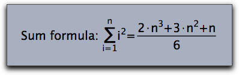
drawtext(
(0,0),
"和の公式: $\sum_{i=1}^n i^2 = { 2\cdot n^3+ 3\cdot n^2 +n\over 6 }$",size->20,
family->"Lucida Calligraphy"
);
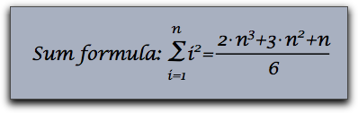
_ と ^ 記号を用います。もし、複雑なサブ・スーパースクリプトを用いたい場合は、波括弧でくくります。通常の TeX スクリプトと異なり、数だけからなるものであれば、括弧はいりません。次のコードがその例です。
textsize(20);
drawtext((0,0), "$A_1$");
drawtext((2,0), "$A_123$");
drawtext((4,0), "$A_1^12$");
drawtext((6,0), "$A_{1_2}^{1/2}$");
drawtext((8,0), "$A_{1_2}^{\sqrt{x^2+y^2}}$");
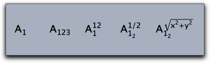
textsize(20);
drawtext((0,0), "$\sum_{i=1}^n (i^2+1)");
drawtext((3,0), "$\sqrt{x^2+y^2}");
drawtext((6,0), "$\int_a^b f(x)dx");
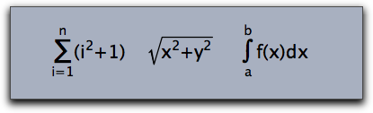
\ を用いて制御コードを書きます。 \sum と \int では、自動的に和の記号や積分記号、上付き文字と下付き文字などを使って式を表現します。次のものは同じように式を作ります。:\prod, \coprod, \bigcup, \bigcap, \bigwedge, \bigvee, \bigoplus,\bigotimes, \bigodot, \biguplus, \int, \iint, \iiint, \ont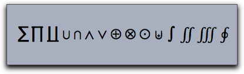
\big, \Big, \bigg, \Bigg に続いて括弧を書きます。次の例をごらん下さい。
drawtext((0,0),size->16,
"$\Bigg( \bigg( \Big( \big( (\ldots) \big) \Big) \bigg) \Bigg)$");
drawtext((5,0),size->16,
"$\Bigg[ \bigg[ \Big[ \big[ [\ldots] \big] \Big] \bigg] \Bigg]$");
drawtext((10,0),size->16,
"$\Bigg\{ \bigg\{ \Big\{ \big\{ \{\ldots\} \big\} \Big\} \bigg\} \Bigg\}$");
drawtext((15,0),size->16,
"$\Bigg| \bigg| \Big| \big| |\ldots| \big| \Big| \bigg| \Bigg|$")
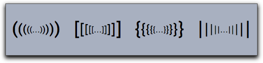
\left と \right を使うことによって、ちょうどよい大きさの括弧でくくることができます。
drawtext((0,0),size->16,
"$\left[\sum_{i=1}^n \left({\sqrt sin(i)\right)\right]^2$")
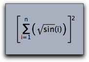
\left と \right は、きちんと入れ子状になっていなければなりません。一方の括弧だけを使いたい場合は \left. あるいは \right. を用います。\frac,\over,\choose,\binom
drawtext((0,0),size->16,"${1+n^2\over 1-n^2}$");
drawtext((3,0),size->16,"${2\choose 3}$");
drawtext((6,0),size->16,"$\frac{a+b}{x^2}$");
drawtext((9,0),size->16,"$\binom{a+b}{x^2}$");
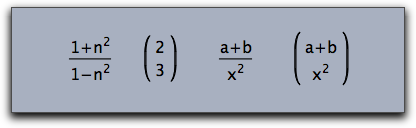
\,\;\quad\qquad\! を使えば、空白の大きさを変えられます。現在のフォントの "m" の大きさが空白の単位になります。\qquad: 2.0 単位の空白
\quad: 1.0 単位の空白
\;: 5/18 単位の空白
\,: 3/18 単位の空白
\!: -5/18 単位の空白（マイナスなので前の文字と重なることになります）
drawtext((0,0),size->16,"$A\!A A \,A\;A\quad A \qquad A$")
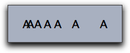
\overline, \underline, \overleftarrow, \overrightarrow, \vec, \hat, \tilde
drawtext((0,0),size->16,"$\overline{A}\;\cap\;\overline{B}\;=\;\overline{A\;\cup\; B}$");
drawtext((6,0),size->16,"$|\overrightarrow{(x,y)}|\;= \; \sqrt{x^2+y^2}$");
drawtext((13,0),size->16,"$\tilde{X}+\hat{Y}\;=\;\underline{X\oplus Y}$");
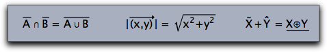
\begin{array}{...}.....\end{array} です。各行は \\ で区切ります。各行の中で、各成分は & で区切ります。２番目の波括弧には、各列での書式を書きます。これは次の３つです。r 右寄せ
l 左寄せ
c センタリング（中央揃え）
drawtext((0,0),
"$M\;=\;\left(
\begin{array}{lcr}
1+1&2&3\\
1&2+2&3\\
1&2&3+3\\
\end{array}
\right)
$"
,size->20);
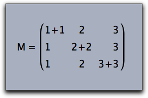
drawtext((0,0),
"$sign(x)\;:=\;\left\{
\begin{array}{ll}
1&if \quad x>0\\
-1&if \quad x<0\\
0&if \quad x=0\\
\end{array}
\right.
$"
,size->20);
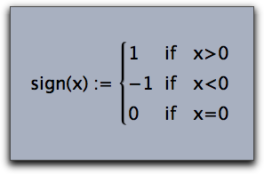
drawtext((0,0), "$\begin{matrix} a-\lambda & b\\ c & b-\lambda\\ \end{matrix}$",);
drawtext((4,0), "$\begin{pmatrix}a-\lambda & b\\ c & b-\lambda\\ \end{pmatrix}$");
drawtext((8,0), "$\begin{bmatrix}a-\lambda & b\\ c & b-\lambda\\ \end{bmatrix}$");
drawtext((12,0),"$\begin{Bmatrix}a-\lambda & b\\ c & b-\lambda\\ \end{Bmatrix}$");
drawtext((16,0),"$\begin{vmatrix}a-\lambda & b\\ c & b-\lambda\\ \end{vmatrix}$");
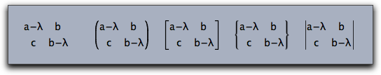
\color{...} を用います。現在用意されている色の名前はwhite, balck, red, green, blue, darkred, darkgreen, darkblue, magenta, yellow, cyan, orange
drawtext((0,0),size->20,color->(0,0,0),
"Sum formula: $
\sum_{\color{darkgreen}i=1}^{\color{darkgreen}n} {\color{darkred}i^2}
\quad = \quad
{\color{blue}{ 2\cdot n^3+ 4\cdot n^2 +n\over 6 }}$"
);
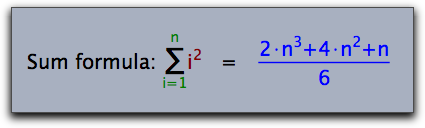
\mbox{....} 記号の波括弧の中に書きます。
drawtext((0,0),size->20,color->(0,0,0),
"$
\sum_{\mbox{All i not equal to j}}(i^2+j^2)
$"
);
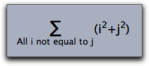
| α | \alpha | β | \beta | γ | \gamma | δ | \delta | ∊ | \epsilon |
| ε | \varepsilon | ζ | \zeta | η | \eta | θ | \theta | ϑ | \vartheta |
| ι | \iota | κ | \kappa | λ | \lambda | λ | \lamda | μ | \mu |
| μ | \my | ν | \nu | ν | \ny | ξ | \xi | ο | \omicron |
| π | \pi | ϖ | \varpi | ρ | \rho | ϱ | \varrho | σ | \sigma |
| ς | \varsigma | τ | \tau | υ | \upsilon | υ | \ypsilon | φ | \phi |
| χ | \chi | ψ | \psi | ω | \omega | Α | \Alpha | Β | \Beta |
| Γ | \Gamma | Δ | \Delta | Ε | \Epsilon | Ζ | \Zeta | Η | \Eta |
| Θ | \Theta | Ι | \Oota | Κ | \Kappa | Λ | \Lambda | Λ | \Lamda |
| Μ | \Mu | Μ | \My | Ν | \Nu | Ν | \Ny | Ξ | \Xi |
| Ο | \Omicron | Π | \Pi | Ρ | \Rho | Σ | \Sigma | Τ | \Tau |
| Υ | \Upsilon | Υ | \Ypsilon | Φ | \Phi | Χ | \Chi | Ψ | \Psi |
| Ω | \Omega |
| ← | \leftarrow | → | \rightarrow | → | \to | ↔ | \leftrightarrow | ⇐ | \Leftarrow |
| ⇒ | \Rightarrow | ⇔ | \Leftrightarrow | ↦ | \mapsto | ↩ | \hookleftarrow | ↼ | \leftharpoonup |
| ↽ | \leftharpoondown | ↪ | \hookrightarrow | ⇀ | \rightharpoonup | ⇁ | \rightharpoondown | ← | \longleftarrow |
| → | \longrightarrow | ↔ | \longleftrightarrow | ⇐ | \Longleftarrow | ⇒ | \Longrightarrow | ⇔ | \Longleftrightarrow |
| ⇖ | \longmapsto | ↑ | \uparrow | ↓ | \downarrow | ↕ | \updownarrow | ⇑ | \Uparrow |
| ⇓ | \Downarrow | ⇕ | \Updownarrow | ↗ | \nearrow | ↘ | \searrow | ↙ | \swarrow |
| ↖ | \nwarrow | ↝ | \leadsto | ⇠ | \dashleftarrow | ⇇ | \leftleftarrows | ⇆ | \leftrightarrows |
| ⇚ | \Lleftarrow | ↞ | \twoheadleftarrow | ↢ | \leftarrowtail | ⇋ | \leftrightharpoons | ↰ | \Lsh |
| ↫ | \looparrowleft | ↶ | \curvearrowleft | ↺ | \circlearrowleft | ⇢ | \dashrightarrow | ⇉ | \rightrightarrows |
| ⇄ | \rightleftarrows | ⇛ | \Rrightarrow | ↠ | \twoheadrightarrow | ↣ | \rightarrowtail | ⇌ | \rightleftharpoons |
| ↱ | \Rsh | ↬ | \looparrowright | ↷ | \curvearrowright | ↻ | \circlearrowright | ⊸ | \multimap |
| ⇈ | \upuparrows | ⇊ | \downdownarrows | ↿ | \upharpoonleft | ↾ | \upharpoonright | ⇃ | \downharpoonleft |
| ⇂ | \downharpoonright | ⇝ | \rightsquigarrow | ↭ | \leftrightsquigarrow | ← | \leftarrow | ↑ | \uparrow |
| → | \rightarrow | ↓ | \downarrow | ↔ | \leftrightarrow | ↕ | \updownarrow | ↖ | \nwarrow |
| ↗ | \nearrow | ↘ | \searrow | ↙ | \snarrow | ⇐ | \Leftarrow | ⇑ | \Uparrow |
| ⇒ | \Rightarrow | ⇓ | \Downarrow | ⇔ | \Leftrightarrow | ⇕ | \Updownarrow | ⇖ | \Nwarrow |
| ⇗ | \Nearrow | ⇘ | \Searrow | ⇙ | \Snarrow |
| ≤ | \leq | ≪ | \ll | ≺ | \prec | ≼ | \preceq | ⊂ | \subset |
| ⊆ | \subseteq | ⊏ | \sqsubset | ⊑ | \sqsubseteq | ∈ | \in | ⊢ | \vdash |
| ∣ | \mid | ⌣ | \smile | ≥ | \geq | ≫ | \gg | ≻ | \succ |
| ≽ | \succeq | ⊃ | \supset | ⊇ | \supseteq | ⊐ | \sqsupset | ⊒ | \sqsupseteq |
| ∋ | \ni | ⊣ | \dashv | ∥ | \parallel | ⌢ | \frown | ∉ | \notin |
| ≡ | \equiv | ≐ | \doteq | ∼ | \sim | ≃ | \simeq | ≈ | \approx |
| ≅ | \cong | ⋈ | \Join | ⋈ | \bowtie | ∝ | \propto | ⊨ | \models |
| ⊥ | \perp | ≍ | \asymp | ≠ | \neq | ± | \pm | × | \times |
| ∪ | \cup | ⊔ | \sqcup | ∨ | \vee | ⊕ | \oplus | ⊙ | \odot |
| ⊗ | \otimes | △ | \bigtriangleup | ⊲ | \lhd | ⊴ | \unlhd | ∓ | \mp |
| ÷ | \div | ∖ | \setminus | ∩ | \cap | ⊓ | \sqcap | ∧ | \wedge |
| ⊖ | \ominus | ⊘ | \oslash | ○ | \bigcirc | ▽ | \bigtriangledown | ⊳ | \rhd |
| ⊵ | \unrhd | ◁ | \triangleleft | ▷ | \triangleright | ⋆ | \star | ∗ | \ast |
| ∘ | \circ | ∙ | \bullet | ⋄ | \diamond | ⊎ | \uplus | † | \dagger |
| ‡ | \ddagger | ≀ | \wr | ∑ | \sum | ∏ | \prod | ∐ | \coprod |
| ∨ | \int | ⋃ | \bigcup | ⋂ | \bigcap | ⊔ | \bigsqcup | ∮ | \oint |
| ⋁ | \bigvee | ⋀ | \bigwedge | ⊕ | \bigoplus | ⊗ | \bigotimes | ⊙ | \bigodot |
| ⊎ | \biguplus | … | \dots | ⋯ | \cdots | ⋮ | \vdots | ⋱ | \ddots |
| ℏ | \hbar | ℓ | \ell | ℜ | \Re | ℑ | \Im | א | \aleph |
| ℘ | \wp | ∀ | \forall | ∃ | \exists | ℧ | \mho | ∂ | \partial |
| ′ | \prime | ∅ | \emptyset | ∞ | \infty | ∇ | \nabla | △ | \triangle |
| □ | \Box | ◇ | \Diamond | ⊥ | \bot | ⊤ | \top | ∠ | \angle |
| √ | \surd | ♢ | \diamondsuit | ♡ | \heartsuit | ♣ | \clubsuit | ♠ | \spadesuit |
| ¬ | \neg | ♭ | \flat | ♮ | \natural | ♯ | \sharp | Ϝ | \digamma |
| ϰ | \varkappa | ב | \beth | ד | \daleth | ג | \gimel | ⋖ | \lessdot |
| ≤ | \leqslant | ≦ | \leqq | ⋘ | \lll | ≲ | \lesssim | ≶ | \lessgtr |
| ⋚ | \lesseqgtr | ≼ | \preccurlyeq | ⋞ | \curlyeqprec | ≾ | \precsim | ⋐ | \Subset |
| ⊏ | \sqsubset | ∴ | \therefore | ⌣ | \smallsmile | ⊲ | \vartriangleleft | ⊴ | \trianglelefteq |
| ⋗ | \gtrdot | ≧ | \geqq | ⋙ | \ggg | ≳ | \gtrsim | ≷ | \gtrless |
| ⋛ | \gtreqless | ≽ | \succcurlyeq | ⋟ | \curlyeqsucc | ≿ | \succsim | ⋑ | \Supset |
| ⊐ | \sqsupset | ∵ | \because | ∥ | \shortparallel | ⌢ | \smallfrown | ⊳ | \vartriangleright |
| ⊵ | \trianglerighteq | ≑ | \doteqdot | ≓ | \risingdotseq | ≒ | \fallingdotseq | ≖ | \eqcirc |
| ≗ | \circeq | ≜ | \triangleq | ≏ | \bumpeq | ≎ | \Bumpeq | ∼ | \thicksim |
| ≈ | \thickapprox | ≊ | \approxeq | ∽ | \backsim | ⊨ | \vDash | ⊩ | \Vdash |
| ⊪ | \Vvdash | ∍ | \backepsilon | ∝ | \varpropto | ≬ | \between | ⋔ | \pitchfork |
| ◀ | \blacktriangleleft | ▷ | \blacktriangleright | ∔ | \dotplus | ⋉ | \ltimes | ⋓ | \Cup |
| ⊻ | \veebar | ⊞ | \boxplus | ⊠ | \boxtimes | ⋋ | \leftthreetimes | ⋎ | \curlyvee |
| ⋅ | \centerdot | ⋈ | \rtimes | ⋒ | \Cap | ⊼ | \barwedge | ⊟ | \boxminus |
| ⊡ | \boxdot | ⋌ | \rightthreetimes | ⋏ | \curlywedge | ⊺ | \intercal | ⋇ | \divideontimes |
| ∖ | \smallsetminus | ⊝ | \circleddash | ⊚ | \circledcirc | ⊛ | \circledast | ℏ | \hbar |
| ℏ | \hslash | □ | \square | ■ | \blacksquare | Ⓢ | \circledS | △ | \vartriangle |
| ▲ | \blacktriangle | ∁ | \complement | ▽ | \triangledown | ▼ | \blacktriangledown | ◊ | \lozenge |
| ◆ | \blacklozenge | ★ | \bigstar | ∠ | \angle | ∡ | \measuredangle | ∢ | \sphericalangle |
| ‵ | \backprime | ∄ | \nexists | Ⅎ | \Finv | ∅ | \varnothing | ð | \eth |
| ℧ | \mho | | | \vert | ‖ | \Vert | ℂ | \C | ℇ | \vareps |
| ℍ | \H | ℑ | \Im | ℓ | \ell | ℕ | \N | ℙ | \P |
| ℚ | \Q | ℜ | \Re | ℝ | \R | ℤ | \Z | ± | \pm |
| ∓ | \mp | ★ | \star | ∗ | \ast | • | \bullet | · | \centerdot |
| ℵ | \aleph | ∈ | \in | ∉ | \not\in | ∋ | \ni | ∌ | \not\ni |
| ∖ | \backslash | ∖ | \setminus | ∕ | \slash | ∀ | \forall | ╳ | \times |
| ∩ | \cap | ∪ | \cup | ⋅ | \cdot | ∞ | \infty | ⇒ | \implies |
| ⋮ | \vdots | ⋱ | \ddots | ⋯ | \cdots | … | \ldots |
\unicode{...} か \unicodex{...} という記号を用いてTeXのなかで使います。第１の式では、Unicodeを10進数で指定します。２番目の式では16進数で指定します。次の（少し高度な）例では、まず sum(...) 関数を用いてUnicodeの列を作り、それをTeXで表示しています。
chess=sum(0..11,i,"\;\unicode{"+(9812+i)+"}");
drawtext((0,0),size->30,"$"+chess+"$");
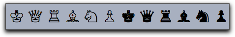
Page last modified on Saturday 10 of March, 2012 [22:53:55 UTC].
The original document is available at
http://doc.cinderella.de/tiki-index.php?page=TeX%20RenderingJ